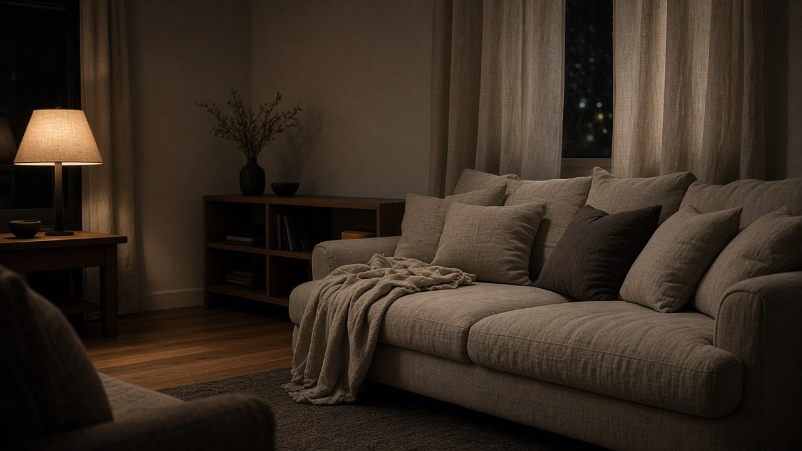
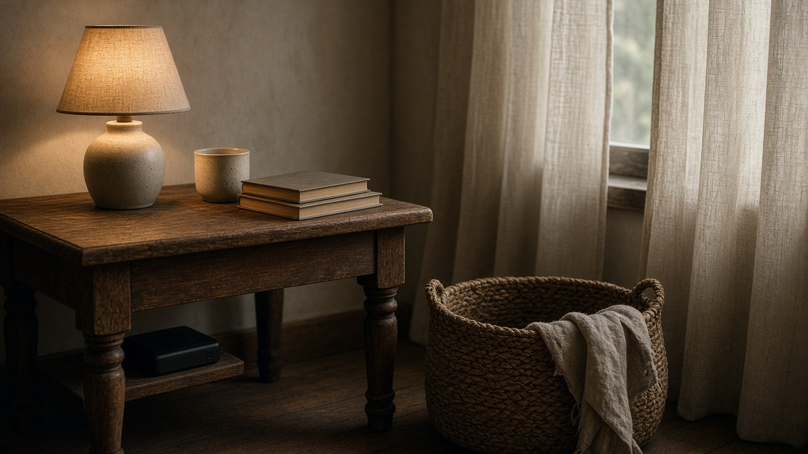
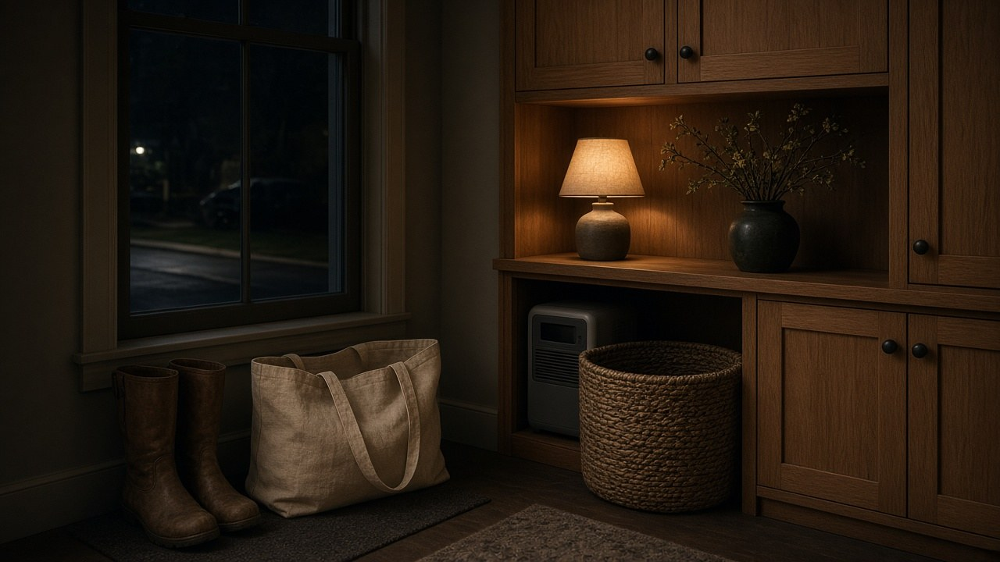

The street has gone quiet in the particular way a block does when the power fails. Porch lights that usually mark the way home are out. Windows that held the evening have gone black. And then, halfway down, one house is still lit — a gold wash on the siding, a lamp behind linen curtains, the kind of light that makes you look twice.
It is not a louder house. It is not a fortress. Someone in that room simply kept a battery ready for the fridge, the router, and the lamp by the sofa. The hidden-home idea, at its quietest, is comfort that stays on when the rest of the block goes dark.
Some links on this page are Amazon affiliate links. We may earn a commission at no extra cost to you.
Our picks at a glance



Four sizes of quiet power
Power, in a hidden home, comes in four sizes. Three of them you can carry. The fourth stays at the house and can keep a fridge going through an outage.
A pocket bank, about 5,000 to 10,000 milliamp hours, keeps a phone alive. An everyday-carry bank, about 20,000 to 27,000 milliamp hours, with at least 65 watts of output, can feed a laptop through a work day. A camping-size power station, around 300 watt-hours, has real AC outlets for lights, a fan, and phones for a night away from the wall. Home-backup stations start at about 1,000 watt-hours, and sometimes grow with extra batteries or a solar panel.
Phone banks are usually listed in milliamp hours. Power stations are listed in watt-hours. They are not the same unit, which is why the table below keeps them on separate rows. These are planning figures, not promises. Real runtimes change with the device, the temperature, and the small losses that happen whenever power is converted.
| Need | Rough energy | What that means in a bank or station |
|---|---|---|
| One phone charge | About 4,000–5,000 mAh | A 10,000 mAh bank is about two phone charges; a 20,000 mAh bank is about four |
| A laptop | A bank of 20,000 mAh or more that can do 65W (140W is more comfortable for a 16-inch machine) | Everyday-carry territory |
| One camping night (lights, a fan, phones) | About 300 Wh | A compact power station |
| A fridge | About 1 kWh (1,000 Wh) a day | Home-backup territory |
| Essentials for a day (fridge, router, lights, phones) | About 1.5 kWh a day | A 1,000–1,500 Wh station is about one day; 2,000–3,000 Wh is about two or three |
For the pocket, we keep coming back to the Twelve South PowerCapsule 10K. It is already on our gear page, and it looks like it belongs in a Lock & Linen room: a slim 10,000 milliamp-hour bank wrapped in vegan leather, in a color called Dune, with Qi2 magnetic wireless charging up to 15 watts and a USB-C port besides. It is usually around $45. About two phone charges, quietly, in a jacket pocket.
Everyday carry

When the day includes a laptop, you want more capacity and at least 65 watts — 140 watts if the machine is a larger one. The Anker Prime Power Bank, 20,100 mAh, 220 W is the everyday-carry we would take first. It holds 20,100 milliamp hours, still light enough for a bag and under the usual carry-on threshold, with 220 watts of total output and up to 140 watts from one USB-C port. It is usually around $180. If you want more headroom for a weekend, the Anker Prime 26,250 mAh, 300 W is the same idea, only larger: 26,250 milliamp hours, 300 watts total, still under 100 watt-hours so it can fly in a carry-on, usually around $230.

Camping
For a night away from the wall, the step up is a small power station with real AC outlets. The DaranEner 600W / 288Wh, also already on the gear page, is camping-size rather than a home unit: 288 watt-hours, 600 watts rated, two AC outlets, a 100-watt USB-C port, and a weight of about nine pounds. It is usually around $175. Lights, a fan, and phones for a night in a tent or a trunk.
When the house needs to stay on

A home-backup power station is a large battery with AC outlets, charged from the wall or from a solar panel. The simplest path is the one we would start with: when the power goes out, move the fridge plug, the router, and a lamp onto the station’s outlets. No wiring. The box can sit in a mudroom or a closet, quietly, with no fumes and none of the clatter of a generator.
If you want selected house circuits to switch over without walking plugs around, a licensed electrician can install a transfer switch or an inlet under local permits. That is work for a professional. Never run a cord from a station or a generator into a wall outlet — it can put power on the lines, and it is unsafe for anyone working on them.
How large a station you want depends on how long you would like the essentials to run. For a fridge, a router, a few lights, and phones, plan on about 1.5 kilowatt-hours a day. A fridge alone is about one kilowatt-hour a day. Runtime is a budget, not a guarantee. A more efficient fridge and LED lamps will stretch it; a space heater or a window air conditioner will spend it quickly.
| Station size | About how long it covers that essentials load | Notes |
|---|---|---|
| 1,000–1,500 Wh | About 1 day | The Jackery Explorer 1000 v2 and the base EcoFlow DELTA 3 Plus live here |
| 2,000–3,000 Wh | About 2–3 days | The Jackery Explorer 2000 v2 lives here |
| Expandable, plus solar | Beyond that | Add a matching expansion battery, and recharge from solar during the day, so the same station covers a longer outage |
For about a day of those essentials, the Jackery Explorer 1000 v2 is the simple start: 1,024 watt-hours, 1,500 watts of AC output, usually around $560. It is not expandable. If two or three days feels more like it, the Jackery Explorer 2000 v2 steps up to 2,042 watt-hours and 2,200 watts, usually around $1,000, still not expandable.
The expandable pick we would lead with is the EcoFlow DELTA 3 Plus. It starts at the same 1,024 watt-hours as the smaller Jackery, with 1,800 watts of AC output, and it can grow to about 5 kilowatt-hours with compatible EcoFlow batteries. It is usually around $720. Prices and sellers move — look at the live listing before you buy.
If that EcoFlow offer looks off, the alternate is the Anker SOLIX C2000 Gen 2. It starts larger, at 2,048 watt-hours and 2,400 watts, and can expand to 4 kilowatt-hours, usually around $950 for the station-only set. Confirm that option, not a solar-panel bundle, before you follow the link, and check the live listing on the day you buy.


The house that still has light
In the end, the picture is simple. The block is dark. One room is not. A lamp is on. The fridge is still holding. The router has not given up. You need a battery the right size for the life you already have, sitting quietly until the evening asks for it.
The full gear list is at lockandlinen.com/gear.